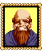

|  |
신부
아, 무사히 돌아왔구나! 빛의힘께서 도와주셨으니 우리 모두 감사히 생각해야한다. 응? 뭐라고? 메타파로 가는 통로가 막혔다고? 그래도 포기하지 말거라. 분명 메타파로 가는 다른길이 있을것이다. |
|
신부
오, 신들의후손들의땅이라 불리우는 프롬프트에 또 통로가 있다고? 행운을 빈다. 아버지께서 너희들을 보셨다면 분명 기뻐하셨을테다. 아버지께서는 돌아가셨지... 프롬프트는 머나만길이다. 조심하거라. |
 |
셸
오랜만이야! 어딜 다녀온거야? 뭐? 링암초? 신부님을 만나셨나보구나 그럼. 신부님의 아버지께서도 신부님이었다는 사실을 알았니? |
|
(아니오)
신부님의 아버지께서는 셰이드수도원의 신부셨어. 가디아나왕과 무슨 연관이 있으셨지. 벌써 떠날거니? 다시 들리면 내가 이곳저곳을 구경시켜줄게! |
|
(예)
진짜? 그분께서는 아버지에 대해 다른이들에게 별로 말을 안하시는데. 벌써 떠날거니? 다시 들리면 내가 이곳저곳을 구경시켜줄게! |
|
셀라
셸은 너를 보려고 아주 노심초사하고 있었다, 맥스. 떠나기전에 꼭 만나보라고. |
|
시몰
나는 시몰의 이모인 시몰이야! 너도 반짝거리는 사람을 봤니? |
|
(아니오)
이상하네... 분명히 봤는데... |
|
(예)
그러면 그렇지! 뭐? 링암초 지하에? 무슨일을 꾸미고 있었을까? 그다지 악인으로 보이진 않았지만... |
 |
워럴섬남자1
아! 벌써 떠난다고? 하지만 이곳은 살기좋다고... |
|
워럴섬남자2
프롬프트로 간다고? 신들의후손이란 사람들은 어떻게 생겼을까...? |
|
여관주인2
링암초가 잠잠해졌나보군... 평화롭게 장사를 할수있겠어. |
|
할아버지
뭐라?! 통로를 찾았다고?! 좋아, 어서가자! ...입구가 막혔다고? 아, 안됐군... |
|
워럴섬사람3
드라고니아라는곳을 들어보았나? |
|
(아니오)
뭐? 드라고니아라는곳을 생전 들어보지도 못했다고? 드라고니아에서는 굉장한 용신들이 살고있다. 고대의보물을 보호한다고 하더군. |
|
(예)
동쪽대륙에 가려거든 그곳에 들러봐야한다. |
|
셸라
나는 셸의 누나인 셰라야. 셸은 네가 무사해서 정말 기뻐한단다 맥스. |
|
워럴섬남자
링암초지하에서 룬파우스트군과 싸웠다고? 여기까지 오다니 그들도 꽤 모험심이 있나보군. 훗! 너희들처럼말야! |
|
여자1
뭐? 다른 신부님을 만나봤다고? 링암초밑에? 맙소사! |
|
여자2
저 보켄은 우리나라를 좋아하게 되었어. 진짜 날생선을 좋아한다니까! |
|
보켄
날생선이 정말 맛이좋군... 허나 나는 아직도 몸이 쑤신다고. 다시 떠나야겠다! 다음에는 용신의땅이라는 드라고니아로 갈지몰라! |
|
여자3
앗! 링암초가 정상으로 되돌아오다니! 이제 너무 따분해! |
|
워럴섬사람4
충분한 무기와 도구들을 장착시켰어? 떠나기전에 점검해보라고. 바다에서 무슨일이 일어날지몰라. |
|
어부5
링암초에 평화가 다시 되돌아왔어. 정말 다행이야. 혹시 네가 이렇게 만든건아니겠지? |
|
어부6
벌써 떠난다고? 곧 다시오라고. 알았지? |
|
여관주인1
또오시기바랍니다! 다시 뵙게될날을 손꼽아 기다리겠습니다! |
|
여관종업원
링암초밑에 이상한 세계가 있었다고? 내가 그걸 믿을것같아? |
|
장관
자네들은 링암초를 정상으로 되돌려놓았군그래? 폐하께서 몹시 기뻐하신다네.
|
|
배수리공
너희 배는 고쳐졌다. 하지만...폐하의 허락없이 돌려줄수없다. |
|
푯말1
배에 떠다니고있다. |
|
푯말2
"이상한 생물 경보는 해제되었다." |
|
푯말3
책장이 아니다. |
|
푯말4
봉우리에 있는 십자가. |
|
책장
수많은 책들이 있다:
"깊은 바다 사원의 비밀"
"바다밑에 있는 해초"
...책중 하나에 무슨 작은 종이가 들어있다.
세가지 종이는 서열의 상승을 나타내는것이다. 세가지를 모두 읽어야한다. |
|
푯말5
비밀닌자술을 훈련중이다. 결투를 원한다면 물고기를 찾아봐야한다. |